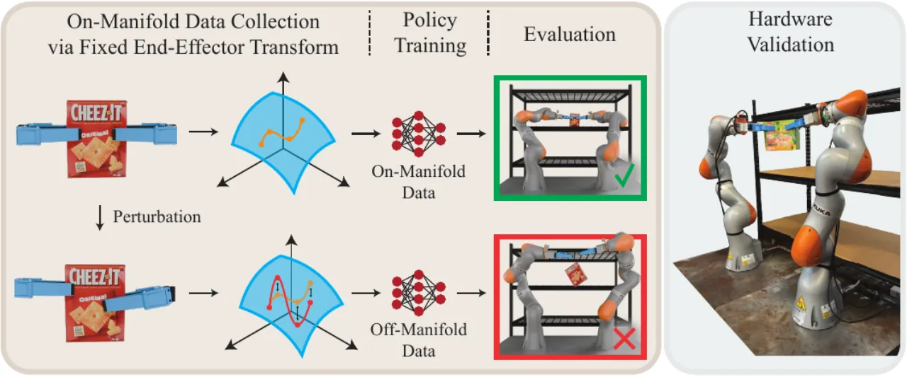
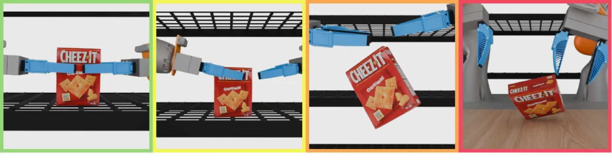
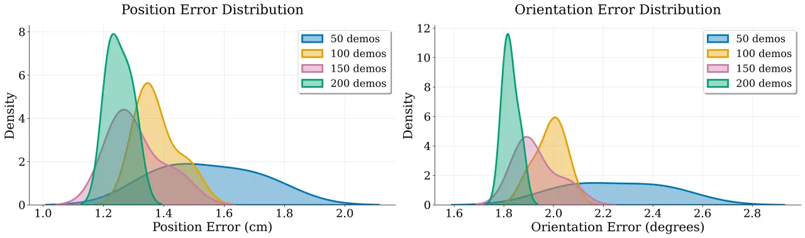
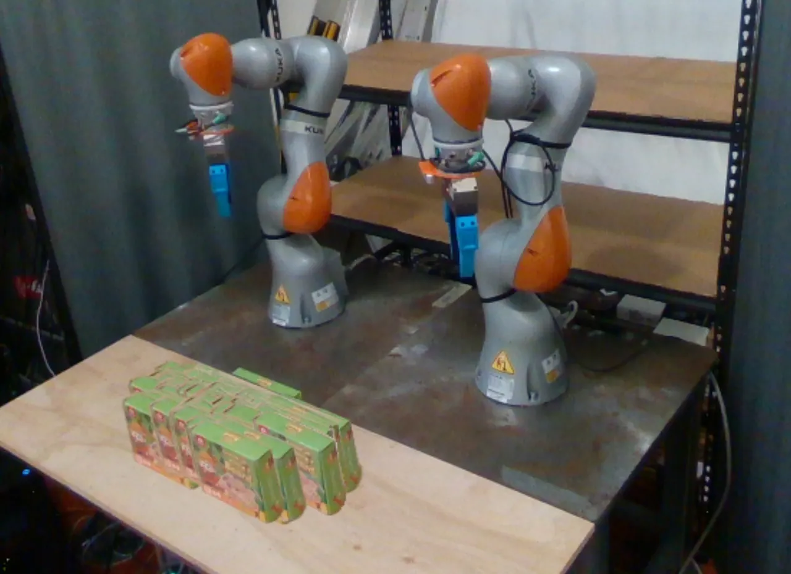

通过一个双臂 pick-and-place 案例研究，作者把「diffusion policy 到底有没有学到数据里的运动学约束」这件事从整套控制栈里剥离出来单独度量。结论是：即使用完全满足约束的数据训练，policy 也只能学到约束流形的粗略近似；数据量与数据质量都很关键，而约束流形的曲率与表现的相关性并不明确。任务成功率高，很大程度靠夹爪柔顺与底层控制器兜底。
Diffusion / flow-based policy 在机器人 imitation learning 上表现亮眼，甚至能完成需要满足运动学等式约束的任务。但作者指出：任务成功率本身并不能可靠地说明 policy 真的精确学到了训练数据中的约束。因为部署时通常还有 constraint-enforcing 的底层控制器、夹爪柔顺、接触力等因素在兜底，policy 自身对约束的遵守程度长期以来是「poorly understood」的。
“there is value in quantifying the extent to which diffusion policies adhere to the constraint manifold in robot data (independent of the lower-level control stack).”
理论动机来自 manifold hypothesis：高维真实数据集中在低维流形附近；若接受这一假设，diffusion 近似等价于向数据流形做 Euclidean projection，于是 Diffusion Policy 可以被理解为「从机器人轨迹流形上采样」。机器人轨迹常沿由运动学约束定义的 configuration space 子流形运动——这些约束隐含在数据里，训练时却几乎从不显式编码，因此没有任何保证 policy 会遵守它们。

任务是双臂协作把桌上的箱子搬到货架上：两个 end-effector 必须保持恒定的相对 transform，否则箱子会被拉扯或掉落。这一「保持恒定相对位姿」的要求，在 configuration space 中是一个非线性运动学等式约束（在 end-effector 空间中是 affine，但在关节空间中高度非线性）。作者刻意选择输出关节角动作，以便研究曲率等更丰富的约束几何问题，并在障碍物间利用冗余度避障。
遥操作者用 VR 头显 + 手柄在 end-effector 空间控制机器人，通过 stereographic shoulder-elbow-wrist (SSEW) angle 参数化解析 IK 来控制 7-DoF 冗余臂的「肘部」以避障（该参数化避开了其他解法中会出问题的表征奇异点）。按下手柄摇杆即进入「transform-locking」模式：选一只臂为控制臂，系统固定两 end-effector 的相对位姿，从属臂自动求解并跟踪 IK 以维持初始相对 transform。开启锁定后位置误差 < 10⁻¹⁰ m、姿态误差 < 10⁻⁶ rad，被视为「无约束违反」。观测含 4 路 RGB（2 场景 + 2 腕部）+ 双臂关节角与上一时刻夹爪指令；动作为 16 维（双臂关节角 + 夹爪）。
任务层面粗分四类结局：I. Full Success（双爪成功搬运）、II. Single-Gripper Success（途中一只爪脱落但仍搬到）、III. Box Drop Failure（抓到但搬运中掉落）、IV. Full Failure（没抓起来）；I+II 记为「成功」。约束层面则度量搬运过程中两 end-effector 相对 transform 的相对位置/姿态误差——只在 policy 预测动作的 knot-points 上评估（一阶保持插值出的中间点即使原预测满足约束也可能违反），且用预测动作而非实测位置，以剥离底层控制器与接触力的混淆。位置误差为欧氏距离，姿态误差为 SO(3) geodesic distance。

仿真中共采集 200 条 transform-locking demo，交叉「4 种数据量 × 4 个 perturbation level」训练 16 个 policy，每个 policy 跑 200 次评估。真机上另采集 100 条 demo 训练一个 policy 验证。下表为各 perturbation level 对应数据集在 end-effector 空间的约束违反幅度（由 η 控制）。
| Perturbation Level | η | Avg. Position Error (cm) | Avg. Orientation Error (deg) |
|---|---|---|---|
| 0 | 0.0 | 0.00 | 0.00 |
| 1 | 0.001 | 0.40 | 0.29 |
| 2 | 0.0025 | 1.01 | 0.71 |
| 3 | 0.005 | 2.02 | 1.43 |
任务成功率整体符合对数据量与质量的「scaling laws」——数据越多、越干净越好。但作者强调在单任务设定下 数据质量比数据量更能预测任务完成：值得注意的是，仅用 50 条 clean demo 训练的 policy，其 Full Success 率就高于用 200 条 level-3 数据训练的 policy。一个有趣的例外是 perturbation level 1 的 policy 与完全干净数据训练的 policy 表现相当甚至略好——作者推测轻微加噪扩大了数据支撑集，带来的多样性收益盖过了微小约束违反的代价（与 block et al. 的理论一致）。
约束满足随数据变多、变干净而改善，且对数据量比对噪声更敏感。下表为各 policy 预测动作中相对 transform 的平均位置误差（cm，均值±标准差）：
| Perturbation | 50 Demos | 100 Demos | 150 Demos | 200 Demos |
|---|---|---|---|---|
| Level 0 | 1.38 ± 0.83 | 1.32 ± 0.71 | 1.24 ± 0.61 | 1.22 ± 0.58 |
| Level 1 | 1.44 ± 0.86 | 1.35 ± 0.72 | 1.28 ± 0.62 | 1.22 ± 0.57 |
| Level 2 | 1.61 ± 0.92 | 1.36 ± 0.70 | 1.27 ± 0.61 | 1.27 ± 0.59 |
| Level 3 | 1.74 ± 1.02 | 1.48 ± 0.74 | 1.44 ± 0.68 | 1.30 ± 0.60 |
“even the policy trained with 200 clean demonstrations exhibits 1.22cm and 1.80° of average error in the relative transform constraint.”
两点核心观察：(1) diffusion policy 无法精确从约束流形上采样——即便 200 条 clean 数据仍有 1.22cm / 1.80° 误差；(2) 但只要数据足够，它能学到流形的粗结构，哪怕数据只是近似满足约束。例如把 clean 动作加噪到最高扰动级，200 条 demo 的 policy 位置误差仅上升 6.6%，而 50 条 demo 的却上升 26%。作者据此推测：数据足够时 diffusion 可能在「平均掉」违反约束的样本，从而恢复出数据流形的近似结构（呼应 Belkin et al. 关于插值估计器仍可最优泛化的经典结论）。这意味着在机器人常处的低数据区，数据质量尤为关键。

作者几乎没有发现 Kretschmann scalar 与误差的相关性：16 个 policy 上 Pearson 相关系数平均 −0.098 ± 0.033（范围 −0.165 ~ −0.036），Spearman 平均 −0.110 ± 0.036——均为可忽略量级。进一步用 rollout 级曲率统计（mean / max）预测结局：以三类结局条件分布间的 Jensen–Shannon divergence 衡量，mean 与 max 曲率的最高散度仅 0.08 / 0.06 nats、平均 0.04 / 0.03 nats，而完全不相交时上限为 ln(3)=1.099 nats。结论是曲率几乎不携带预测信息。作者给出两种可能解释：Kretschmann scalar 未能揭示真正起作用的曲率；或数据流形本身的几何影响更大（但其曲率难以估计）。
真机 100 demos policy 二元成功率 73%（I=60%、II=13%、III=8%、IV=19%），约束误差 0.81±0.42cm / 1.04±0.55°。真机上「推箱子摆正」比仿真难得多（占近 1/5 rollout，因所用箱子又薄又轻易被碰倒），而 box drop 反而比仿真少。sim 与真机 policy 的约束违反都在 1–3cm、2–2.5° 量级，却仍能可靠完成任务——说明柔顺夹爪 + 强抓握力缓解了微小约束违反，底层控制/柔顺与 imitation learning 算法进步同样重要。

即便用完全满足约束的数据训练，diffusion policy 也只学到约束流形的粗略近似；任务仍能成功，很大程度归因于鲁棒底层控制器或物理柔顺夹爪，而非 policy 自身精确满足约束。
Kretschmann scalar 与约束满足/任务成功的相关性可忽略。作者自陈两种可能：真正起作用的曲率未被该标量揭示（rollout 只探索了配置空间的一小部分）；或数据流形几何影响更大，但因只有粗略近似而难以测量其曲率。
全部结论基于一个双臂 pick-and-place 任务与一类相对 transform 约束。作者明确指出未来需验证结论是否能推广到更广泛的运动学约束任务。
实验只用了 configuration-space 关节角动作；换成 end-effector pose 或 relative action 等其他动作空间时结论是否成立仍是开放问题。
这些倾向究竟是 diffusion policy 特有，还是更普遍地适用于 imitation learning，作者称仍是 open question。